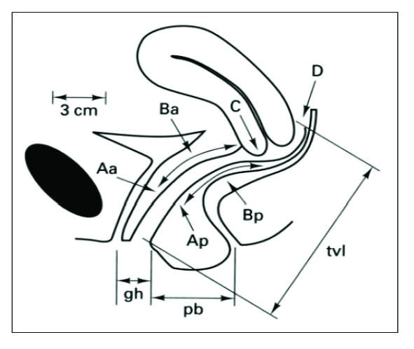

Página 9 · Prolapsos / distopia genital
POP-Q: o sistema de coordenadas do prolapso
O POP-Q é lógico — não há o que desesperar
Mapeados os tipos, a pergunta vira quantitativa: esse prolapso é grande a ponto de precisar operar? O primeiro sinal é a queixa clínica — a paciente já relata a bola na vagina, a exteriorização. Mas a medida objetiva é o POP-Q, a quantificação do prolapso de órgão pélvico. É a hora em que muita gente boa se perde e trava diante de seis letrinhas e um monte de sinais. Não há por que travar: cada ponto responde a uma pergunta simples — essa parede está dentro ou fora? Desmontado por partes, o sistema é pura lógica, e é justamente ele que separa quem lê o prolapso de quem só o descreve.
O princípio do sinal (a chave, reforçada)
A chave que abre tudo é a mesma da abertura: número negativo = a estrutura está dentro do canal vaginal (da carúncula himenal para dentro); número positivo = está para fora; zero = a carúncula himenal (o intróito). Com essa regra, qualquer ponto se lê de imediato: o sinal dá a direção, o valor dá a distância em centímetros até o plano zero.
Aa e Ba: a parede anterior (azinho anterior)
Os pontos Aa e Ba medem a parede vaginal anterior — o foco é a letra minúscula “a”, “azinho de anterior”. São dois pontos da mesma parede da frente: um mais fixo (Aa) e outro que acompanha o ponto mais dependente do prolapso (Ba). O ideal é avaliar e anotar os dois, embora a questão às vezes cite só um deles.
Ap e Bp: a parede posterior (pezinho posterior)
Do mesmo jeito, Ap e Bp medem a parede vaginal posterior — foco na minúscula “p”, “pezinho de posterior”. Assim como há um “azão e azinho” na frente, há um “pezão e pezinho” atrás. A simetria do sistema ajuda: dois pontos por parede, a minúscula dizendo o compartimento.
A ausência de prolapso mora em −3
Um valor de referência que a banca cobra: na ausência de prolapso, os pontos anteriores (e os posteriores) estão exatamente em −3 — 3 cm para dentro da vagina, que é a distância até a carúncula himenal. Saber que “normal é −3” é o que permite reconhecer o assoalho íntegro e, mais adiante, não ter medo de marcar “tudo normal” numa prova.
Ponto C: colo ou cúpula
O ponto C é o colo ou a cúpula — “C de colo ou cúpula”. É o ponto do ápice: mede onde está o topo, seja o colo (se há útero) ou o fundo da vagina (se não há). Mas o C sozinho não diz qual dos dois é — para isso existe o ponto D.
Ponto D: o fundo de saco de Douglas que distingue colo de cúpula
O ponto D é o fundo de saco de Douglas — “D de Douglas” —, e é ele que distingue o C: se tem ponto D, é porque tem colo (o fundo de saco existe porque há útero); se não tem ponto D (aparece um X ou um tracejado no lugar), é porque é cúpula (não há fundo de saco, pois não há útero). O ponto D é o detetive do ápice: sua presença ou ausência decide se o topo que desceu é colo ou cúpula.
O boneco POP-Q — toque cada ponto
Cada ponto responde a uma pergunta simples: essa estrutura está dentro (−) ou fora (+)? O zero é a carúncula himenal.

A figura de referência do sistema: os seis pontos (Aa, Ba anteriores; Ap, Bp posteriores; C, D apicais) medidos a partir do plano do hímen (o zero). Ancora as coordenadas no padrão publicado.
Persu C et al. “Pelvic Organ Prolapse Quantification System.” J Med Life. 2011;4(1):75-81 (Fig. 3), via PubMed Central. Licenciado sob CC BY. Fonte: PMC.
real de referência — diagrama oficial POP-Q, não achado clínicoMapa do assoalhoAncora a coluna “ponto POP-Q” do mapa: Aa/Ba na parede anterior, Ap/Bp na posterior, C/D no ápice — cada ponto no seu compartimento.
Quiz — fixação
Ao medir o ápice, encontra-se um ponto C descido, mas não há ponto D (registrado como X/tracejado). Isso indica que:
- B — a virada. Sem ponto D = sem fundo de saco = sem útero → o C é a cúpula.
- A. inverte: ter colo exigiria ter ponto D; a ausência aponta o contrário.
- C. o X/tracejado não é falha do exame — é o registro correto de que não há fundo de saco.
- D. o ponto D é decisivo justamente aqui: é ele que separa colo de cúpula.
- Por que cair. ver “C descido” e assumir “colo” ignora que o C é ambíguo por definição — quem desambigua é o D.
Numa paciente sem prolapso, os pontos Aa e Ba da parede anterior estão em:
- B — a virada. O normal dos pontos A/B é −3 — dentro, 3 cm proximais ao plano zero.
- A. 0 é a carúncula himenal (o intróito); a parede normal fica mais para dentro que isso.
- C. +3 seria a parede para fora — prolapso, não normalidade.
- D. −7 é ordem de grandeza do ápice/CVT, não da parede anterior sem prolapso.
- Por que cair. confundir “normal” com “no ponto de referência (0)”; o zero é a fronteira, mas a parede íntegra repousa em −3.
As letras minúsculas em Aa/Ba e Ap/Bp servem para indicar:
- B — a virada. A minúscula nomeia o compartimento — “a” anterior, “p” posterior (azinho/pezinho).
- A. o sistema não codifica gravidade na letra — isso vem do valor e do estágio.
- C. POP-Q não separa lados por essa letra.
- D. quem indica útero é o ponto D, não as minúsculas de A/B.
- Por que cair. procurar significado de “gravidade” nas letras é um reflexo, mas a letra é só endereço (parede), e o número é que gradua.
Sabendo ler cada ponto, falta a pergunta que decide a conduta: isso é um prolapso pequeno que nem se opera, ou uma procidência total? É a régua que gradua — o estágio de 1 a 4.